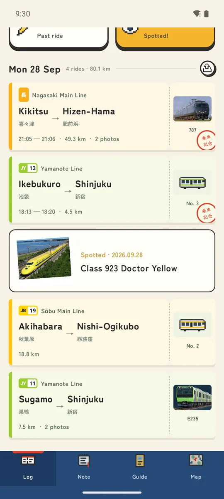
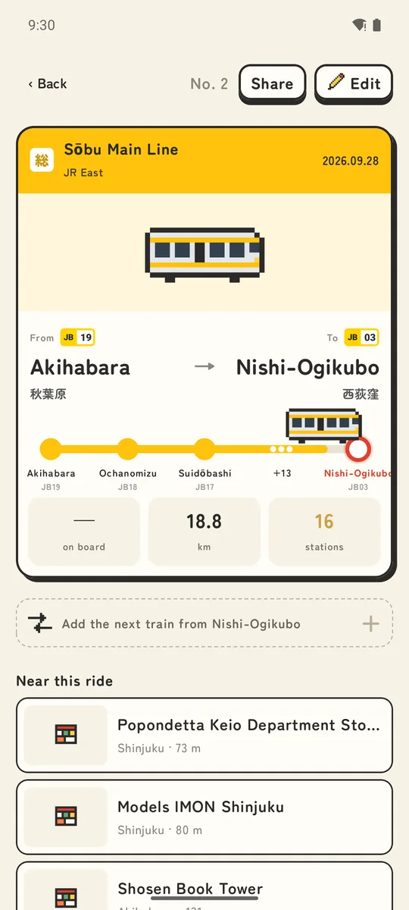
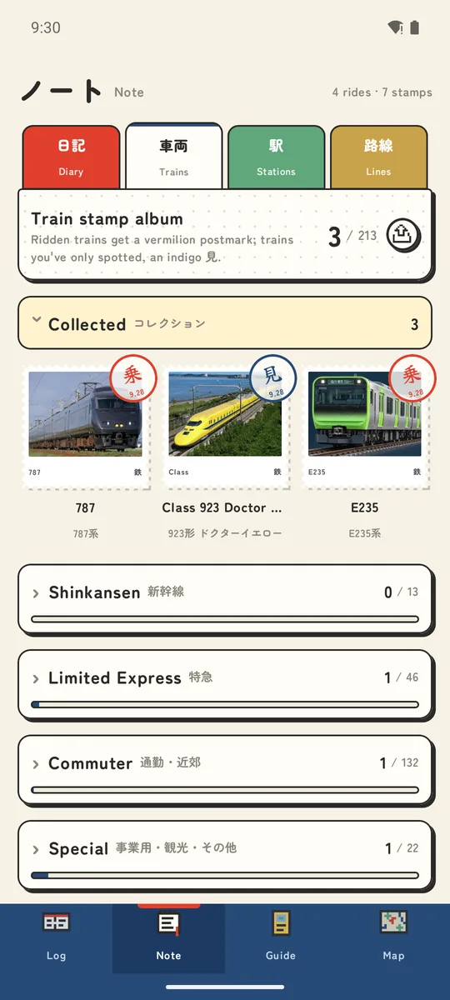
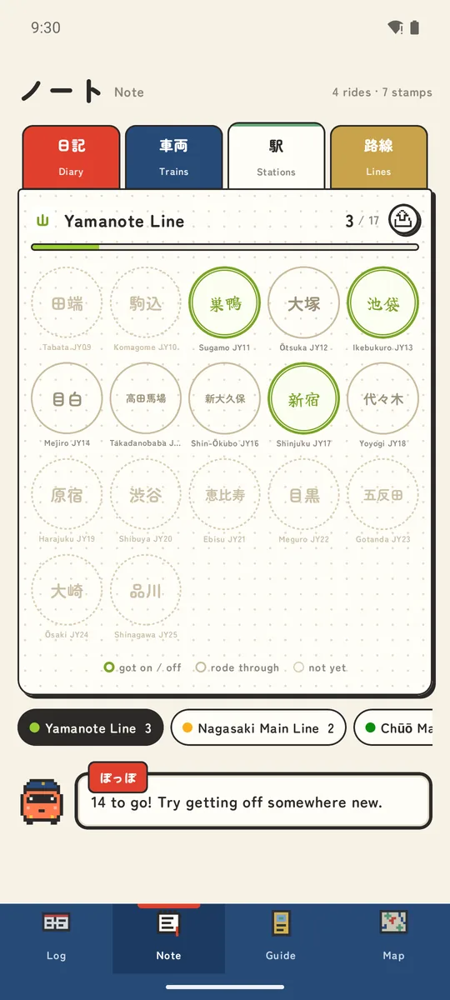
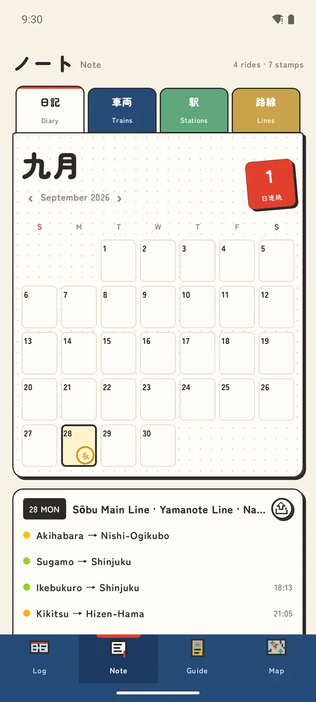
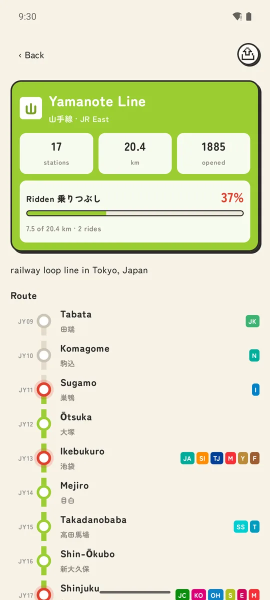
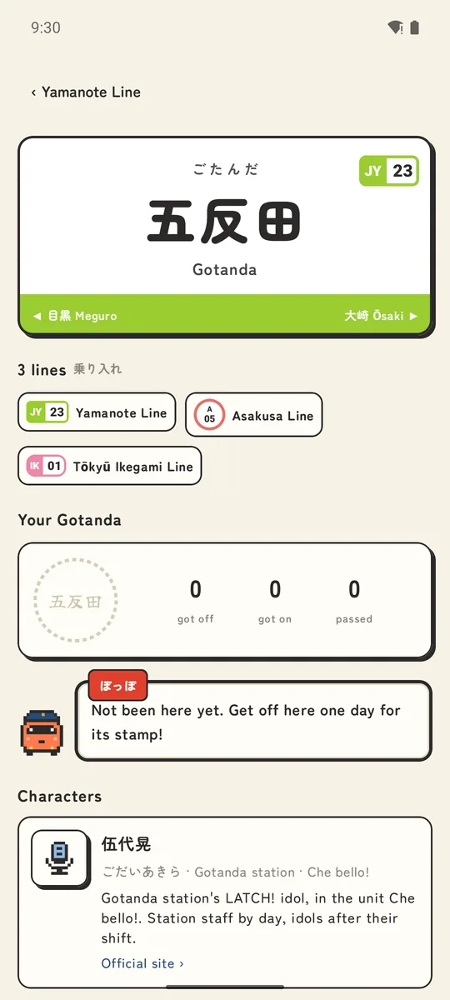
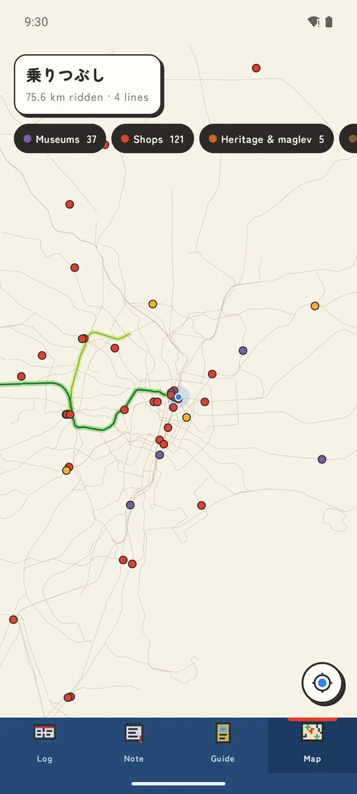

乗った列車を、全部ノートに。 Every train you ride, in one notebook.
日本の鉄道のための乗車記録アプリ。乗車は切符に、車両は切手帳に、降りた駅は御朱印に。乗りつぶし地図を塗って、鉄道模型店や鉄道バーも探そう。 A railway logbook for Japan. Rides become tickets, trains go in a stamp album, and every station you get off at is stamped like a goshuin. Fill in the 乗りつぶし map, and find model railway shops and train bars on the way.

「発車」で乗車開始。次の駅と駅番号、残りの駅数がわかり、到着すると御朱印が押される。Tap 発車 on the train: see the next station with its number and the stops to go. Arrive, and the station is stamped like a goshuin.
乗った日にスタンプが押される日記、切手のような車両スタンプ帳、路線ごとの駅スタンプ帳、完乗までの達成率。A diary with a stamp for every day you ride, a stamp album of trains, a station stamp card for each line, and progress towards riding every line end to end (完乗).
255形式の車両、594路線、10,154駅。豆知識、駅名標、ご当地キャラクターや言い伝えも。255 train models, 594 lines and 10,154 stations with their numbers, facts, station signs, and the characters and legends that belong to them.
乗った区間がラインカラーで光る。鉄道博物館、鉄道模型店、鉄道書店、鉄道バー・カフェを種類で絞り込み。What you've ridden glows in each line's colour. Museums, model railway shops, railway bookshops, and train bars and cafés, filtered by kind.
乗車、御朱印、一日の乗車、路線の達成率、スタンプ帳をカードにしてシェア。Share a ride, a stamp, a day's rides, a line's progress or your stamp cards as a picture card.
アカウント不要、広告なし。位置情報は乗車中と地図だけ（使わない設定も可）、端末の外には出ません。No account, no ads. Location is used only during a ride and on the map (or not at all, if you prefer) and never leaves your phone.







tetsunote.apk を開く。Open the downloaded tetsunote.apk.Google Play 版ではなく、直接配布している試験版です。新しい版は同じ署名なので、上書きインストールで記録はそのまま残ります。 This is an early test build shared directly, not through Google Play. New versions carry the same signature, so installing over the top keeps your log.
SHA-256 ca44eb9e399525118f5d2f2176fabeda19652233b4c191b44ef5422ea092ecfb
署名証明書Signing certificate SHA-256
e89837f4f4999d6d023ec6dd3eec423a84d178108a9a97c3420bfc603cd49258
すべてのリリースAll releases
鉄道データはオープンデータとして公開しています：The railway data is open: tetsunote-api · 鉄道アトラスrailway atlas